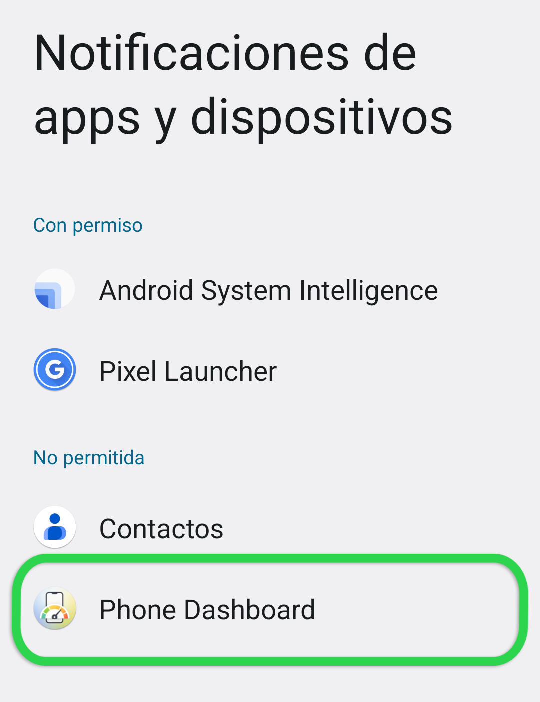
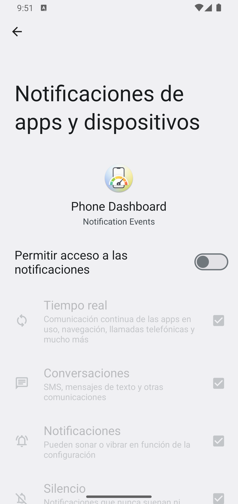

Para funcionar correctamente, Phone Dashboard necesita permiso para monitorear las notificaciones de sus aplicaciones.
En la siguiente pantalla, será dirigido a la configuración de su dispositivo para otorgar a Phone Dashboard permiso de acceso a esta información. Cuando esté en la pantalla de Notificaciones de dispositivos y aplicaciones, desplácese hacia abajo y seleccione Phone Dashboard.

En la siguiente pantalla después de seleccionar Phone Dashboard, verá un interruptor que dice Permitir acceso a notificaciones. Active ese interruptor para otorgar el permiso.

Tenga en cuenta que Phone Dashboard no registra el contenido de sus notificaciones, solo qué aplicaciones las están publicando y cuándo se eliminan esas notificaciones.
Una vez que esto esté completo, use el botón de retroceso de Android para volver a esta pantalla y continuar con los siguientes pasos.
Tenga en cuenta que diferentes fabricantes de dispositivos pueden tener pantallas que se ven diferentes. Si tiene problemas para completar este paso, por favor contacte al equipo de investigación para obtener asistencia.